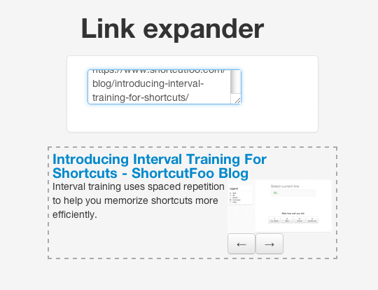

Link Expander


Description
Link Expander is a little app to demonstrate how to create a facebook like link expander. By link expander, I mean the way facebook behaves when you paste a link into the post box.
In depth
The app is mainly composed by three files: Crawler.php, expander.php and
main.coffee.
Crawler.php
This is the class that crawls the web page looking for the info to expand. At the time of writing this, the class is able to extract several information of a web page:
- The title. Uses the
<title></title>tag. - The description. If there is a meta description tag, uses this, if not, uses the first paragraph.
- The images. An array with all the images of the page.
You can use the Crawler class out of the project, it’s so simple.
<?php
include 'Crawler.php';
$crawler = new Crawler('the url you want to crawl');
$crawler->crawl();
$title = $crawler->extractTitle();
$description = $crawler->extractDescription();
$images = $crawler->extractImages();
expander.php
This script uses the Crawler class to create a json object from the crawled page. It is a kind of API between the Crawler class and the javascript code.
Gets a url variable by $_GET and crawls it, returning a JSON object with the
content of the page.
main.coffee
This is the file that makes the request to the expander script and parses the returned JSON object.
To use it you have to compile it to js:
coffee --compile --output js/ coffee/
Maybe you have to change in this file the url of the expander.php script.
Installation
in the document root of the server:
git clone https://github.com/jlgarhdez/link-expander.git # grab the source
cd link-expander # go to the folder
coffee --compile --output js/ coffee/ #compile the coffee files to js
Nothing else, hope it will be usefull for you.